Data publicării: 25.09.2017
Autor articol: Adrian Iftene
Introducere
În această lucrare vom prezenta cele mai importante domenii ce folosesc intens realitatea augmentată (Azuma, 1997), (Glockner et al., 2014).
Domeniul medical
Medicii ar putea utiliza AR ca ajutor vizual și de antrenare pentru chirurgie (Azuma, 1997). Este posibil să se colecteze date în timp real ale unui pacient, utilizând senzori neinvazivi cum ar fi imagistica prin rezonanță magnetică (MRI), tomografia computerizată (CT) sau imagistica cu ultrasunete. Aceste seturi de date ar putea fi apoi redate și combinate în timp real cu imaginea pacientului real. De fapt, acest lucru ar da unui medic “imagini de raze X” în interiorul unui pacient. Acest lucru ar fi foarte util în timpul intervențiilor chirurgicale minime invazive, ceea ce reduce trauma unei operații prin incizii mici sau chiar fără incizii. O problemă cu tehnicile puțin invazive este că ele reduc capacitatea medicului de a vedea alte elemente în interiorul pacientului, ceea ce face ca intervenția chirurgicală să fie mai dificilă. Totuși, ca un avantaj important, tehnologia AR ar putea oferi o viziune internă augmentată, fără a fi nevoie de incizii mai mari.
În prezent, se folosește aplicația Liver Explorer1 a dezvoltatorului Fraunhofer MEVIS. Această aplicație oferă ghiduri AR în timp real și asistență medicală. Aparatul foto filmează ficatul și, folosind AR, suprapune datele de planificare chirurgicală pe organ. În plus, software-ul poate reacționa în timp real (de exemplu actualizarea planului chirurgical în funcție de mișcarea vaselor de sânge pe care sistemul software o urmărește în mod constant).
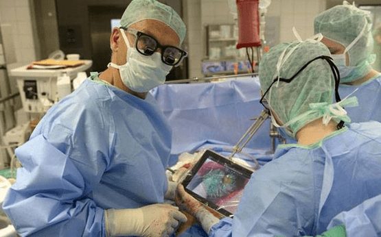
Producție și reparații
O altă categorie de aplicații cu realitate augmentată este asamblarea, întreținerea și repararea mașinilor complexe. Instrucțiunile ar putea fi mai ușor de înțeles dacă ar fi disponibile, nu ca manuale cu text și imagini, ci ca desene 3D care se suprapun pe echipamentul propriu-zis, arătând pas cu pas sarcinile care trebuie făcute și modul în care trebuie să se facă. Aceste imagini 3D pot fi animate, făcând instrucțiunile și mai explicite.
În domeniul auto, cei de la Volkswagen au dezvoltat sistemul MARTA (Mobile Augmented Reality Technical Assistance)3. Acest sistem vine în ajutor atunci când o mașină nu funcționează corect, ajutând utilizatorul să efectueze operații de reparare și întreținere a autovehiculului. Aplicația recunoaște piesele vehiculelor prin recunoașterea de obiecte și descrie textual și prin imagini toate etapele care trebuiesc executate în timp real. Această aplicație rulează pe diverse dispozitive mobile.
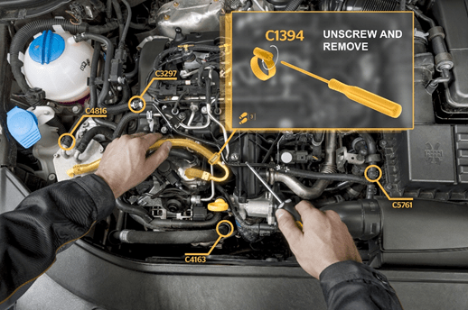
Modelare 3D colaborativă
Sistemul MREAL5 (Mixed Reality System) de la Canon sprijină procesul de proiectare, permițând îmbinarea modelelor 3D generate de calculator cu obiecte din lumea reală. MREAL permite mai multor utilizatori să lucreze colaborativ și simultan cu un model de produs. Sistemul poate fi folosit pentru a analiza modul în care componentele reale se vor potrivi împreună cu un model planificat. Aplicația face acest lucru prin crearea unui model 3D atât al componentelor existente, cât și al componentelor noi, pe care le combină mai apoi.
De exemplu, un scaun de mașină existent poate fi integrat într-un model nou de mașină. Deoarece MREAL oferă o realitate mixtă, utilizatorii pot să stea în scaunul (real) și să vadă atât mediul real din afara mașinii, cât și reprezentarea digitală a interiorului mașinii, inclusiv noul tablou de bord și noul volan.
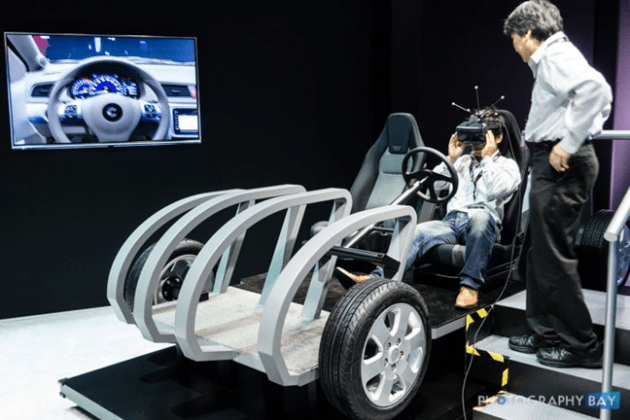
Adnotare și vizualizare
AR ar putea fi folosit pentru a adnota obiecte și medii cu informații publice sau private. Aplicațiile care utilizează informațiile publice presupun disponibilitatea bazelor de date publice pe care să le poată utiliza. De exemplu, un afișaj portabil ar putea oferi informații despre conținutul rafturilor de bibliotecă în timp ce utilizatorul se plimbă prin bibliotecă (Fitzmaurice, 1993). La ECRC (European Computer-Industry Research Centre), un utilizator poate indica anumite părți ale unui model de motor, iar sistemul AR afișează numele părții selectate (Rose et al., 1995).
Wikitude7 și Metaio Junaio8 sunt două exemple de browsere AR care furnizează informație sensibilă la context, capabilă să recunoască locații sau obiecte din lumea reale pe care le poate conecta la informațiile digitale. Software-ul rulează pe orice smartphone și afișează informații digitale suplimentare despre împrejurimile utilizatorului într-o vizualizare a camerei mobile.
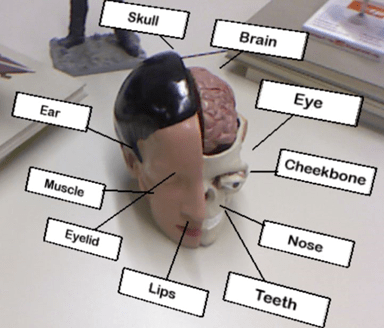
Planificarea traseului unui robot
Teleoperarea unui robot este adesea o problemă dificilă, mai ales atunci când robotul este departe, cu întârzieri lungi datorate comunicării. În această situație, în loc de a controla direct robotul, ar fi preferabil să se controleze o versiune virtuală a robotului. Utilizatorul planifică și specifică acțiunile robotului prin manipularea versiunii virtuale locale, în timp real. Rezultatele sunt afișate direct în lumea reală. Odată ce planul este testat și determinat, atunci utilizatorul îi spune robotului real să execute planul specificat. Astfel se evită problemele cauzate de întârzierile datorate comunicării.
Versiunile virtuale pot, de asemenea, prezice efectele manipulării mediului, servind astfel ca un instrument de planificare și previzualizare pentru a ajuta utilizatorul să îndeplinească sarcina dorită. Sistemul ARGOS a demonstrat că astfel de soluții funcționează mai bine decât soluțiile clasice (Milgram et al., 1995).
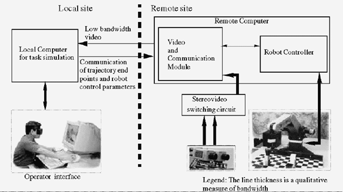
Domeniul militar
Timp de mulți ani, avioanele și elicopterele militare au folosit căști cu afișaje de tip HUDs (Head-Up Displays) și HMS (Helmet-Mounted Sights) pentru a suprapune grafică vectorială peste imaginile pe care pilotul le are asupra lumii reale. Pe lângă furnizarea de informații de navigare și de zbor de bază, aceste imagini grafice sunt uneori înregistrate cu ținte în mediul înconjurător, oferind o modalitate de a vizualiza armele aeronavelor (Wanstall, 1989).
O aplicație militară folosită în prezent este casca Q-Warrior9. Elementele AR au rolul de a oferi militarilor o atenție situațională, identificare de prieteni sau de inamici, viziune de noapte și o capacitate sporită de a coordona de la distanță micile unități de soldați dotați cu echipamente similare. Casca transmite informații detaliate despre fiecare purtător către ceilalți, permițând sistemului să colecteze, să poziționeze pe hartă și să partajeze informații și poziții în timp real pe câmpul de luptă și în timpul recunoașterii. Este ușor de anticipat că astfel de sisteme vor fi dezvoltate pentru alți profesioniști care lucrează în medii periculoase, cum ar fi pompierii și de către cei ce aplică legea.
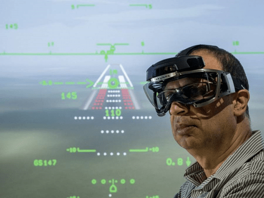
Dacă în prima parte am prezentat domeniile clasice ce folosesc realitatea augmentată, în partea a doua vom vedea care sunt domeniile noi ce beneficiează de AR și direcțiile de viitor (Glockner et al., 2014).
Divertisment
La SIGGRAPH ’95, câțiva expozanți au arătat “Mulțimi virtuale” care combină actori cu fundaluri virtuale, în timp real și în 3D. Actorii stau în fața unui ecran albastru mare, în timp ce o cameră mobilă controlată de calculator înregistrează scena. Deoarece locația camerei este monitorizată și mișcările actorului sunt știute de dinainte, este posibilă combinarea digitală a actorului într-un fond virtual 3D. Industria de divertisment vede acest lucru ca o modalitate de a reduce costurile de producție: crearea și stocarea scenelor este practic mai ieftină decât construirea constantă de scene fizice noi de la zero.
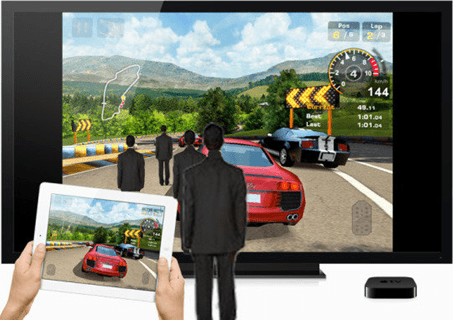
Activități de agrement
Recon Jet12 este un sistem AR deja disponibil pentru activitățile de agrement. Afișajul de la nivelul capului (ochelari sau lentile) se conectează la senzori de la terți, cum ar fi Bluetooth și WiFi, și oferă în timp real informații despre traseu și despre vreme, permite accesul la rețelele sociale și oferă informații în timp real despre performanță. De exemplu, un alergător ar vrea să știe viteza, distanța până la linia de finiș, diferența de altitudine și ritmul cardiac. Cu aceste capacități, Recon Jet ne dă o imagine asupra viitoarelor dezvoltări din domeniul wearable AR, care ar putea monitoriza, pe lângă semnele vitale ale unei persoane și împrejurimile locurilor de muncă, ce se desfășoară în medii periculoase.
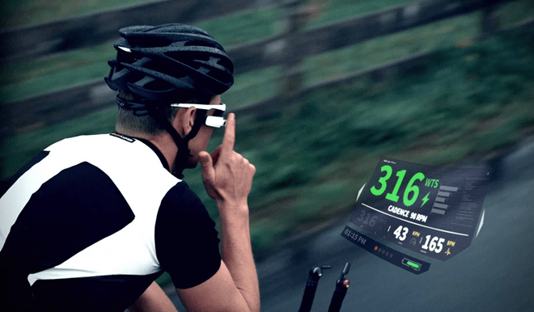
Traducere
Unul dintre cele mai promițătoare domenii de aplicare în AR este domeniul traducerii. O aplicație existentă este software-ul Word Lens14 care rulează pe aproape orice telefon inteligent și traduce simultan un text dintr-o limbă în alta. Cu această aplicație rulând, utilizatorul doar își îndreaptă dispozitivul spre o bucată de text scris într-o limbă străină. Apoi, dispozitivul afișează aceste informații traduse în limba maternă a utilizatorului. Este scris în același font și pe același fundal din lumea reală ca textul original.
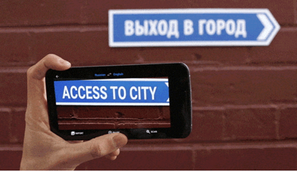
Recunoaștere facială
Un exemplu de acces facil la informații de pe Internet în situații specifice din viața reală este combinația detectării feței cu AR. O aplicație care este promisă a fi disponibilă în curând este aplicația Infinity AR16. Ideea este de a analiza o față și de a o compara și de a o potrivi cu imaginile de profil găsite în rețelele sociale (de ex. Facebook). Informațiile afișate în profilul asociat sunt apoi afișate în câmpul vizual al utilizatorului.
Pe lângă faptul că este util în aplicațiile destinate majorității consumatorilor, această tehnologie este foarte promițătoare pentru agențiile ce aplică legea (de exemplu, scanarea persoanelor dintr-o mulțime pentru identificarea unor criminali căutați). În mod evident, această aplicație a generat multe probleme legate de confidențialitatea datelor.
Industria auto – asistență pe durata deplasării
În prezent cei de la BMW, afișează pe parbrizul mașinii informații ce ajută în deplasare18, ca viteza, direcția de deplasare ce se bazează pe recunoaștere de obiecte din mediul real, asistență la parcare, informații preluate de la senzori, atenționări legate de trafic, avertizări legate de posibile coliziuni, etc.
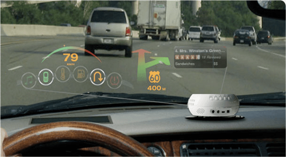
Design interior
Unul dintre cele mai sugestive exemple este cel mai recent catalog Ikea ce folosește AR20. Dezvoltat de Metaio, această aplicație AR permite utilizatorilor să utilizeze dispozitivele mobile pentru a “plasa” versiunile digitale ale mobilierului Ikea în camerele lor de locuit, facilitând testarea dimensiunii, stilului și culorii mobilierului într-o poziție aleasă. Această aplicație permite de asemenea utilizatorului să schimbe dimensiunea și culoarea fiecărei piese.
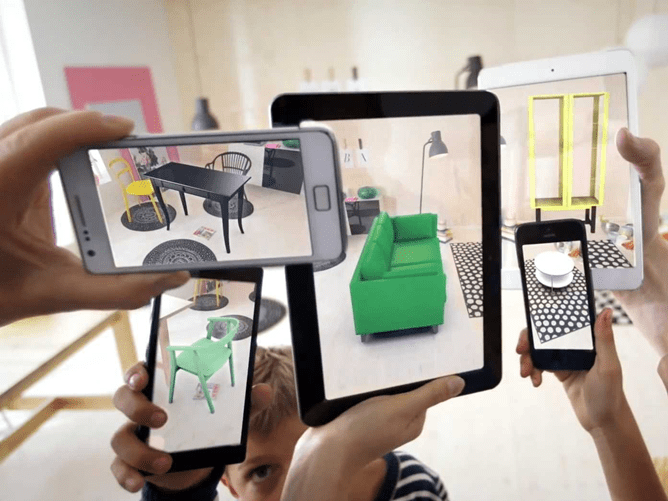
Prieteni virtuali
Un hacker din Japonia a folosit un model 3D disponibil și senzori de mișcare pentru a avea o “întâlnire AR” cu o faimoasă vedetă de desen animat din Japonia (Hatsune Miku22). În videoclipul său, el arată cum merge cu Miku într-un parc adevărat și cum Miku recunoaște și reacționează la obiectele din lumea reală (de exemplu, se așează pe un scaun adevărat). Acest software permite chiar interacțiunea cu steaua pop virtual (de ex. atingerea cravatei sau a capului). Această aplicație ne oferă ideea că, în curând, oamenii pot fi însoțiți de prezențe virtuale care ar putea oferi asistență atunci când este nevoie (de exemplu, în domeniul medical sau în domenii inginerești sau ca o interfață umană pentru activitățile zilnice, cum ar fi gestionarea unui calendar personal, a notițelor și a contactelor).
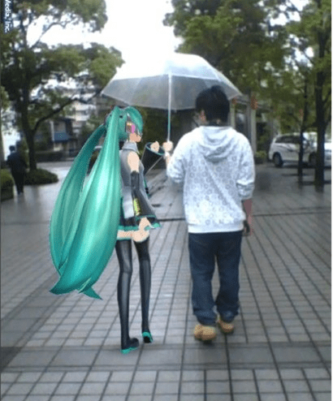
Utilizarea gesturilor în AR
Cu tot mai multe obiecte “inteligente” conectate la Internet și cu noi modalități de accesare a informațiilor digitale, tot mai mulți oameni doresc să lucreze cu dispozitive și date AR. În esență, aplicațiile AR permit o realitate mixtă în care obiectele reale pot fi modificate și controlate cu ajutorul controalelor din aplicații. O modalitate avansată de a interacționa cu lumea digitală în mișcare este utilizarea gesturilor. Un exemplu de sistem de interfață gestuală este SixthSense24, dezvoltat de MIT. Sistemul permite utilizatorului să interacționeze cu informații prin gesturi naturale ale mâinii. Pentru a capta intrarea dorită a utilizatorului, aparatul foto recunoaște și urmărește gesturile mâinii utilizatorului folosind tehnici bazate pe “computer vision”.
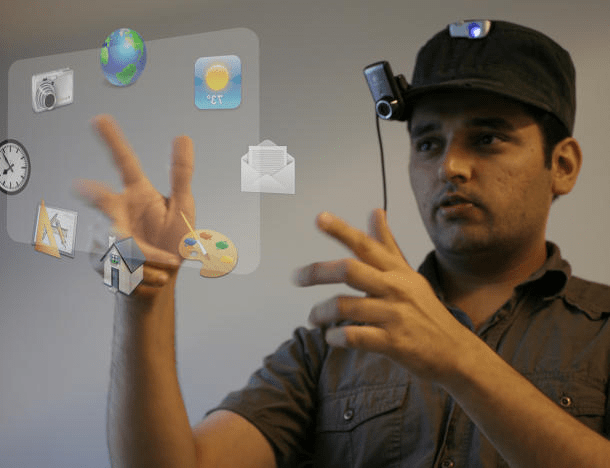
Internet of things
Interfețele bazate pe AR nu se limitează la dispozitivele informatice. Acestea pot fi folosite pentru a controla autoturisme, aparatura audio și video din casă, aparate de uz casnic sau sisteme de încălzire. Un exemplu este sistemul Revolv26, care este în curs de dezvoltare. În combinație cu Google Glass, sistemul oferă utilizatorului control asupra tuturor dispozitivelor digitale din gospodărie (de exemplu, sistemul de iluminare și sistemul de securitate). Rezultatul este un mediu augmentat “inteligent” al gospodăriei, care poate fi controlat de la distanță prin voce sau prin deget.
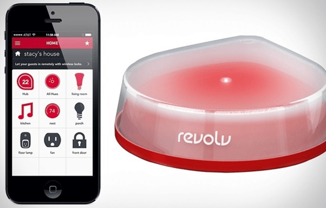
Concluzii
Domeniile de aplicabilitate a realității augmentate sunt din ce în ce mai diversificate. De la domeniile clasice, precum medicina, ingineria, domeniul militar, modelarea 3 D colaborativă, robotica, la domeniile mai noi, adaptate la zilele noastre: divertisment, rețele sociale, design interior și exterior, traducere, securitate, asistență auto pe durata deplasării, etc. În perioada următoare prevedem o implicare mai mare în zona transmiterii de comenzi și acțiuni prin intermediul gesturilor, fie în aplicațiile de divertisment, fie în aplicațiile de gestionare a senzorilor dintr-o casă inteligentă.
În articolele următoare vom vedea cum este implicată realitatea augmentată în alte două domenii mari: domeniul e-learning și domeniul jocurilor.
Referințe bibliografice
- Glockner, H., Jannek, K., Mahn, J., Theis, B., “Augmented reality in logistics. Changing the way we see logistics – a DHL perspective”. Publisher: DHL Customer Solutions & Innovation, 2014.
- Azuma, R. T. “A survey of Augmented Reality. In Presence: Teleoperators and Virtual Environments 6”, 4 (August 1997), pp. 355-385, 1997.
- Fitzmaurice, G. “Situated Information Spaces: Spatially Aware Palmtop Computers”. CACM 36, 7 (July 1993), pp. 38-49, 1993.
- Glockner, H., Jannek, K., Mahn, J., Theis, B. “Augmented reality in logistics. Changing the way we see logistics – a DHL perspective”, Publisher: DHL Customer Solutions & Innovation, 2014.
- Madsen, J. B., Tatzqern, M., Madsen, C. B., Schmalstieg, D., Kalkofen, D. “Temporal Coherence Strategies for Augmented Reality Labeling”. IEEE Transactions on Visualization and Computer Graphics 22, 4 (April 2016), 1415-1423. DOI: http://doi.org/10.1109/TVCG.2016.2518318, 2016.
- Milgram, P., Drascic, D., Grodski, J. J., Restogi, A., Zhai, S., Zhou, C. “Merging Real and Virtual Worlds”. Proceedings of IMAGINA ’95 (Monte Carlo, 1-3 February 1995), pp. 218-230, 1995.
- Rastogi, A., Milgram, P., Drascic, D., Grodski, J. J. “Telerobotic Control with Stereoscopic Augmented Reality”. In SPIE vol. 2653: Stereoscopic Displays and Virtual Reality Systems III, San Jose, California, USA, January – February 1996, pp. 115-122, 1996.
- Rose, E., Breen, D., Ahlers, K., Crampton, C., Tuceryan, M., Whitaker, R., Greer, D. “Annotating Real-World Objects Using Augmented Reality”. Proceedings of Computer Graphics International ’95 (Leeds, UK, 25-30 June 1995), pp. 357-370, 1995.
- Wanstall, B. “HUD on the Head for Combat Pilots”. Interavia 44 (April 1989), pp. 334-338, 1989.
http://www.volkswagenag.com/en/group/research/virtual-technologies.html
http://www.photographybay.com/2015/09/14/canon-mreal-mixed-reality-hands-on/
http://www.pcworld.com/article/2010894/how-augmented-reality-is-redefining-entertainment.html
http://bigthink.com/design-for-good/word-lens-real-time-translation-via-augmented-reality
http://virtualrealityreporter.com/infinity-ar-touchable-virtual/
http://virtualrealityreporter.com/infinity-ar-touchable-virtual/
http://www.motoringfile.com/2011/10/12/bmw-group-developing-augmented-reality-windshield-displays/
http://www.businessinsider.com/ikeas-2014-augmented-reality-catalog-2013-8
http://trak.in/tags/business/2009/11/11/sixth-sense-real-open-source/